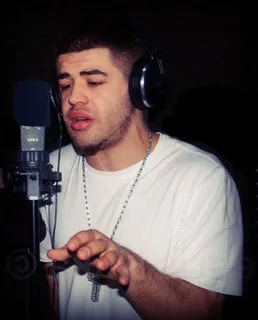

Noizy është një rapper shqiptar i njohur për muzikën e tij hip-hop dhe kontributin në skenën muzikore të Shqipërisë. Emri i tij i vërtetë është Rigels Rajku, dhe është lindur më 27 shtator 1986 në Durrës, Shqipëri. Ai është një nga artistët më të njohur dhe të suksesshëm në muzikën e hip-hopit në Shqipëri dhe në komunitetin shqiptar nëpër botë Noizy fillon karrierën e tij muzikore në vitin 2005 dhe shpejt bëhet i njohur për tekstet e tij të forta dhe stilit të tij të veçantë. Disa nga këngët më të njohura të Noizy përfshijnë "Cunat e Noizy," "Boja Me Doren," "100 Probleme," dhe "Te Amo," ndërsa ai ka bashkëpunuar me artistë të tjerë shqiptarë dhe ndërkombëtarë në shumë projekte muzikore. Gjatë karrierës së tij, Noizy është një artist kontroversial dhe i diskutuar, por ka arritur të bëjë një ndikim të madh në skenën muzikore shqiptare dhe është një nga figurat kryesore të hip-hopit në Shqipëri. Ai ka fituar shumë çmime dhe është një nga artistët më të dashur të të rinjve në Shqipëri dhe më gjerë.
Here is a video of him telling his story
Here is the diss to babastars from noizy